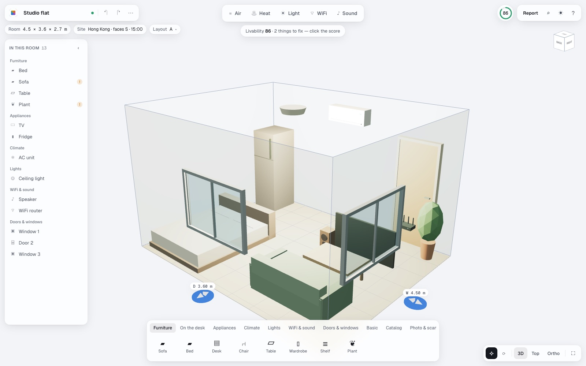
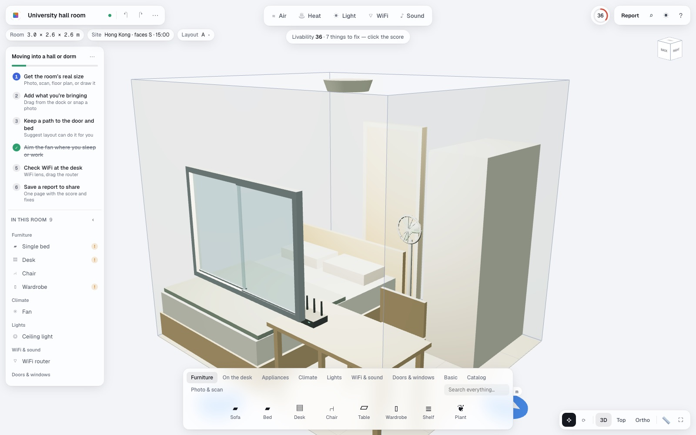

Moving into a hall
Wants the bed, desk and fan in the right places on day one.
Hurts a room they’ve never seen, a summer with no AC, one chance to carry things.
Gets real size from a photo, a path to the door, the fan aimed at the bed.
Design
How we went from a brief about testing changes to a tool people can use in a weekend: who it’s for, the journey they take, the principles we hold, and what changed between versions.
Process
Proto-personas
Assumptions to test, not research findings. Each became a guided plan in the app.
Wants the bed, desk and fan in the right places on day one.
Hurts a room they’ve never seen, a summer with no AC, one chance to carry things.
Gets real size from a photo, a path to the door, the fan aimed at the bed.
Wants a cooler room before buying another fan.
Hurts not knowing whether it’s the sun, the layout or the windows.
Gets solar gain per window, cross-breeze, ISO 7730 comfort at each seat.
Wants a desk that’s bright, glare-free, connected and quiet.
Hurts screen glare, dead WiFi corners, echoey calls.
Gets lux on the desk, glare checks, WiFi at the desk, echo time.
Wants a dark, quiet bedroom at the right temperature.
Hurts street noise, early sun, a humming fridge.
Gets outside noise vs the WHO guideline, blackout effect, comfort under a duvet.
Wants to show a client why layout B is better.
Hurts renders that look good but say nothing about living in the room.
Gets A/B layouts on every metric, an optimizer, a client report.
Journey map
Each stage is a step in the “Moving into a hall” plan.
Snaps a photo of the empty room from the doorway.
“I don’t own a tape measure.”
Room size from a photo · AI scan · LiDAR scan · draw it
Adds the bed, desk and fan they’re bringing.
“Will my desk even fit?”
Drag from the dock · shop links at real size · photo detection
Moves things around until it feels right.
“I can’t tell if I can still get to the wardrobe.”
Clearance overlay · Suggest layout · lock what stays
Wonders if it’ll be bearable in August.
“Where does the fan go?”
Air and Heat lenses · comfort at the bed · WiFi at the desk
Sends the plan to a roommate or parent.
“They can’t open a 3D file.”
One-page report · AR on a phone
Principles
Iterations


